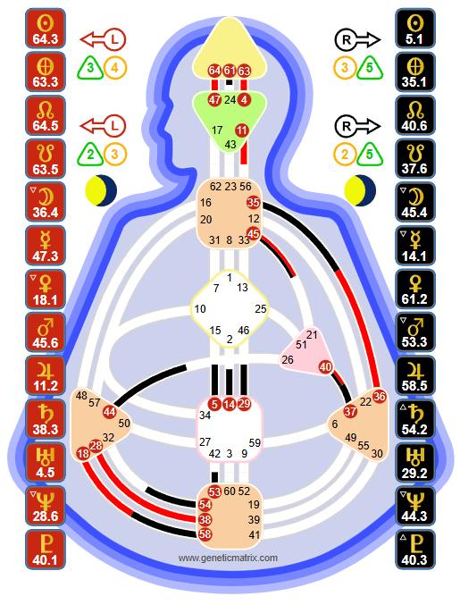

The initiator. Manifestors are the only Type designed to act independently - to start things, catalyze change, and set new directions in motion. Their closed aura protects them from outside influence, and their path to peace lies in one practice: informing.

Tools, not doctrine. The Human Design System was transmitted through Ra Uru Hu beginning in 1987. Genetic Matrix provides these tools for your own exploration and experiment. The chart shown is Julianne Moore - an Emotional Manifestor.
A Manifestor is someone with an undefined Sacral center and a motor center connected directly to the Throat. The motor can be the Root, the Solar Plexus, or the Heart/Ego - but not the Sacral. This configuration creates the only Type in Human Design that is designed to initiate action independently.
Historically, Manifestors were the rulers, the monarchs, the alpha leaders. In the seven-centered era before 1781, they dominated human society. They could act on their own impulses, make things happen, and lead by force of will. The shift to the nine-centered era has changed the Manifestor's role - they are no longer the dominant Type - but their initiating capacity remains unique and powerful.
Manifestors make up approximately 9% of the population. They are rare, and their energy is distinct. They do not have sustainable life force like Generators - they operate in powerful bursts of initiating energy, followed by periods of rest. They are designed to start things, not necessarily to sustain them.
Key Insight
The deepest wound most Manifestors carry is from childhood. Manifestor children act independently - they go where they want, do what they want, without telling anyone. This terrifies parents, who respond with control and punishment. The child learns to hide their actions, creating a lifelong pattern of anger and secrecy. The adult practice of informing heals this wound by creating transparency without sacrificing independence.
The Manifestor Strategy is simple in concept and revolutionary in practice: tell the people who will be impacted by your actions what you are about to do, before you do it.
This is not asking permission. Manifestors are not designed to ask for approval. Informing is a declaration: "I am going to do this." It is a courtesy that reduces the resistance that Manifestors naturally encounter because of their closed aura.
Without informing, Manifestors blindside people. Their closed aura means others cannot sense what they are about to do - and when action comes out of nowhere, people react with fear, control, and opposition. The Manifestor meets anger and resistance everywhere they go. With informing, the path clears. People step aside. Resistance dissolves. Peace becomes possible.
Most Manifestors resist informing because it feels like asking permission - a direct trigger for childhood conditioning. They were controlled as children, and any transparency feels like vulnerability. The practice of informing requires recognizing that informing is power, not weakness. It is the Manifestor choosing to clear their own path rather than fighting through resistance.
Inform anyone who will be impacted by your action. Not the whole world - just the people in the blast radius. Your partner, your team, your collaborators. "I am starting a new project." "I am leaving early." "I have decided to change direction." Simple, clear, and before the action - not after.
Manifestors can have several Authorities:
Emotional Authority (Solar Plexus defined): The most common. Despite the urge to initiate immediately, Emotional Manifestors must wait for emotional clarity. There is no truth in the now. The wave must settle before acting. This is the hardest practice for a Type built to move fast.
Splenic Authority: Instinctual, in-the-moment knowing. The Spleen speaks once - act on it immediately. Splenic Manifestors have the fastest decision-making of any configuration: the impulse to initiate is confirmed by the Spleen in real time.
Ego/Heart Authority: The will speaks through blurted truths. When the Ego-manifested Manifestor speaks spontaneously, what comes out is their truth. If the will says yes, it is total commitment. If it says no, nothing can force it.
The Manifestor aura is closed and repelling. It pushes others away - not out of hostility, but as a protective mechanism. The Manifestor is designed to act independently, and their aura ensures that outside influences cannot easily penetrate and redirect them.
This creates a paradox: Manifestors have a powerful impact on others, but others cannot impact them in the same way. People feel the Manifestor's energy - it can be intimidating, exciting, or unsettling - but they cannot read what the Manifestor is about to do. This unpredictability is what makes informing essential.
The Manifestor aura also creates a natural sense of authority. People instinctively respond to Manifestor energy - they either get out of the way or try to control it. There is rarely a neutral reaction. This is the energetic reality that has made Manifestors the rulers and catalysts throughout human history.
Peace is the Manifestor's signature. It is not passivity - it is the absence of resistance. When a Manifestor informs before acting, moves through the world with transparency, and honors their initiating impulses without meeting pushback, they experience a profound ease. Things flow. Doors open. The path is clear.
Anger is the not-self theme. Manifestor anger is not ordinary frustration - it is a deep, burning response to being controlled, blocked, or forced to wait. It often traces back to childhood conditioning, where the Manifestor's independent nature was punished. Adult anger typically signals that the Manifestor has not informed and is meeting the resistance that follows.
Some Manifestors carry a lifetime of suppressed anger. The practice of informing - consistently, as a way of life - gradually dissolves the patterns that create resistance. Peace is not something Manifestors achieve overnight. It is something that builds as informing becomes natural.
Without a defined Sacral center, Manifestors do not have sustainable energy. They operate in bursts - powerful surges of initiating energy followed by periods where the energy withdraws. This is correct. The Manifestor is not designed to work eight hours a day sustaining output. They are designed to initiate, catalyze, and then step back.
Manifestors often do best when they can start things and hand them off to Generators and Manifesting Generators to build and sustain. The Manifestor lights the spark; others tend the fire. Trying to do both leads to burnout and anger.
Like Projectors and Reflectors, Manifestors should lie down before they are exhausted to allow the energies of others to discharge from their open Sacral center.
On Genetic Matrix: Generate a free Foundation chart to confirm your Type and Authority. See which motor connects to your Throat - this reveals the nature of your initiating energy. Advanced and Pro charts show deeper layers of your design.
The experiment: For one week, practice informing before every significant action. Tell your partner, your colleagues, your family what you are about to do - before you do it. Notice how the resistance in your life changes. Notice how peace begins to replace anger.
The celebrity database: Explore Manifestors in Genetic Matrix's 87,000+ celebrity database. See how the Manifestor mechanic manifests in catalysts, innovators, and independent leaders across every field.
Overview of all Human Design Types - Strategy, Authority, and aura mechanics.
The life force. Sacral energy, response, and the path to satisfaction.
The multi-passionate hybrid. Speed, response, and informed action.
The guide. Recognition, invitation, and the path to success.
The mirror. Openness, the lunar cycle, and the path to surprise.
See your full chart - which motor connects to your Throat, your Authority, Profile, and the complete architecture of your Manifestor design.
Try free with Starter plan →